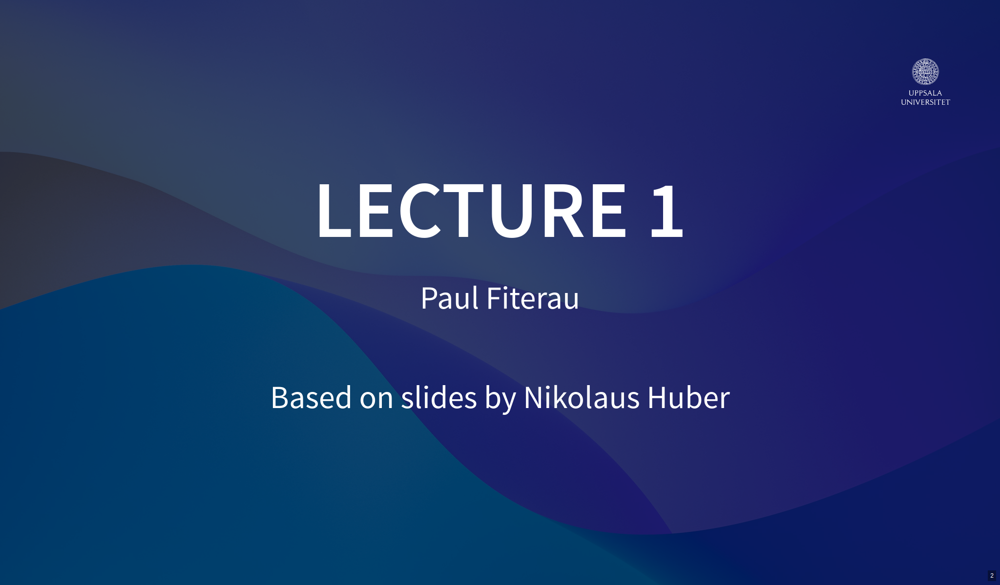
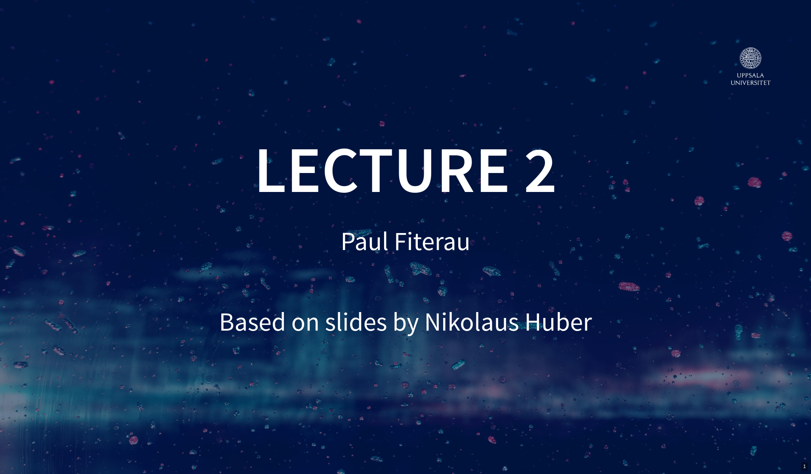
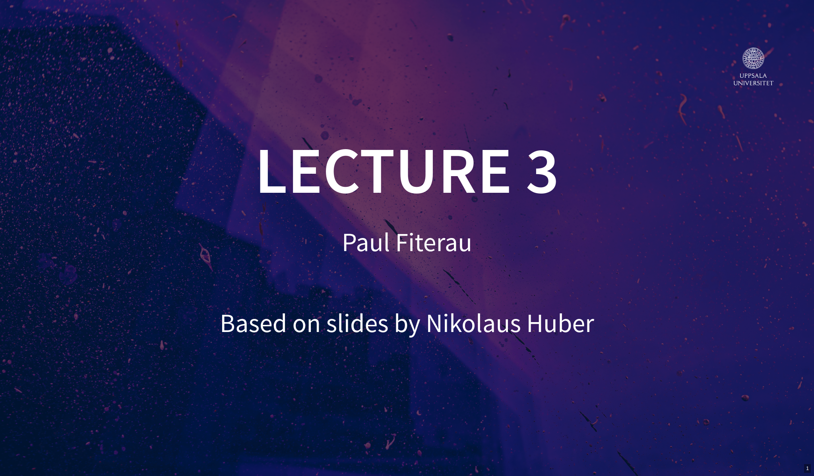
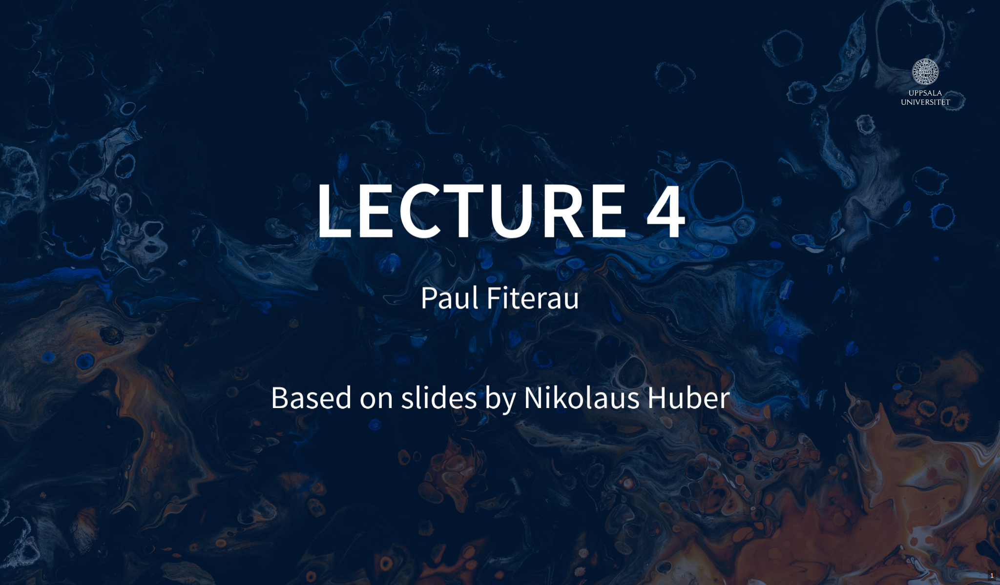
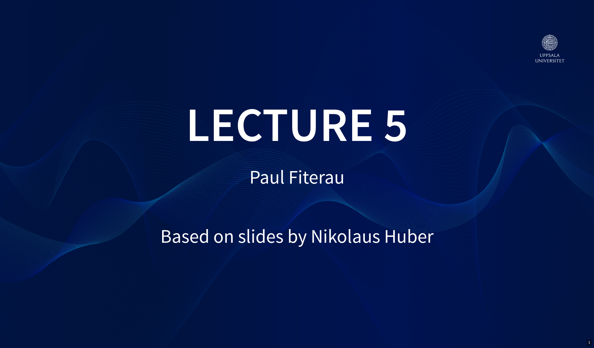
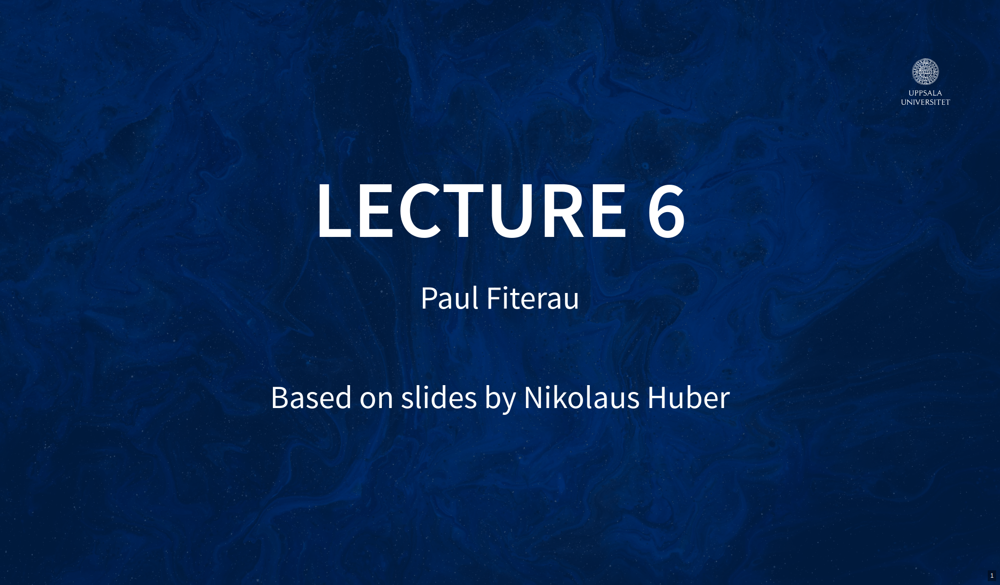
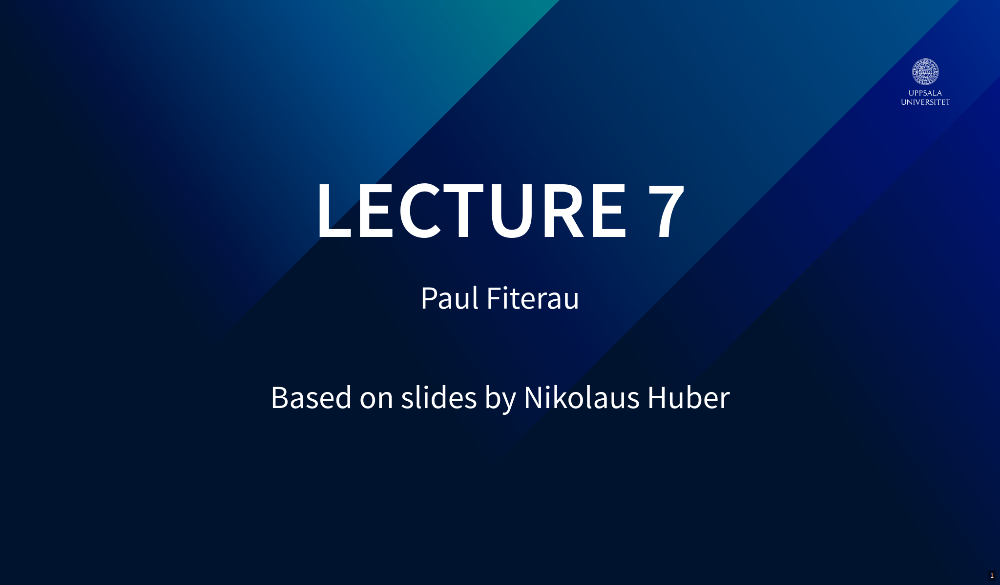
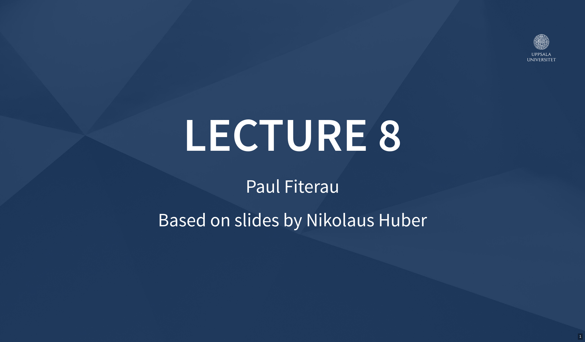
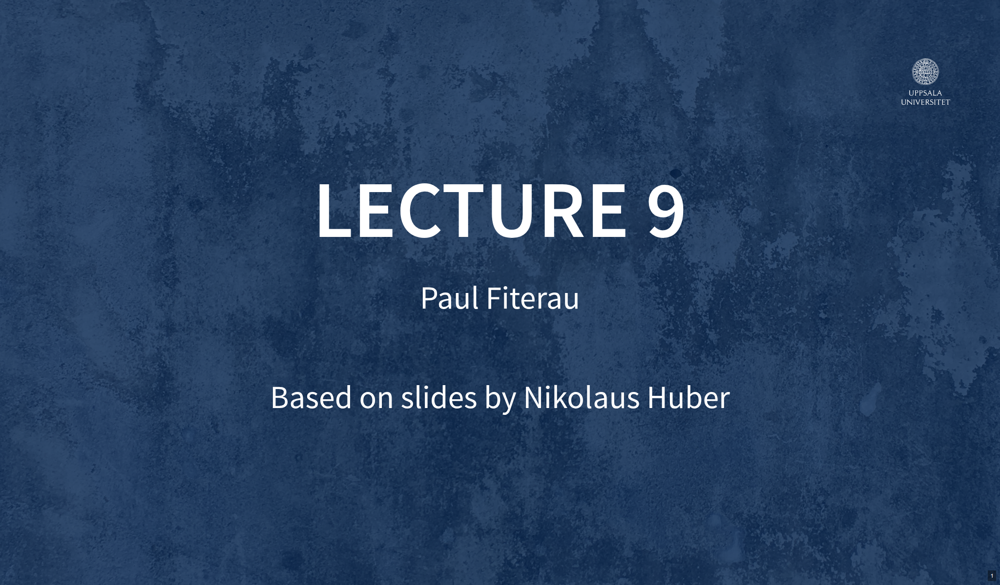
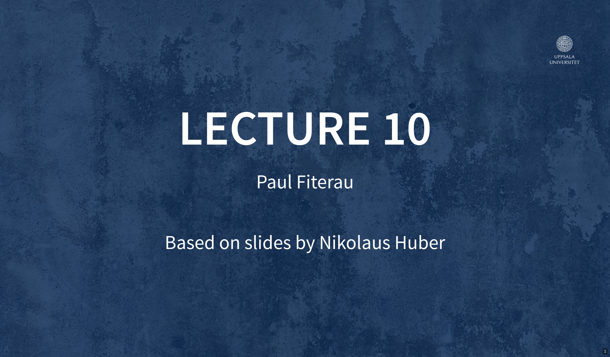

Lecture Slides
Here you can find the lecture slides for 1DT106 @ Uppsala University 2026 edition.

- Course Organization
- Pico SDK

- State Machines
- Traffic Light Example
- Bare-metal vs RTOS

- RTOS Basics
- Zephyr
- Zephyr Blinky Example
- Zephyr Deferred Interrupt Processing

- Memory Management

- Requirement Engineering
- Component-level Specification (Contract,assume/assert)
- System-level Specification

- Testing
- Coverage

- Debugging
- Problem Shrinking
- Slicing

- Transition Systems
- Model Checking
- Deductive Verification

- Asymptotic Complexity
- Space-time tradeoff
- Measuring & profiling
- Low-level optimization

- Ethical Decision Making
- Ethical Aspects of CPS